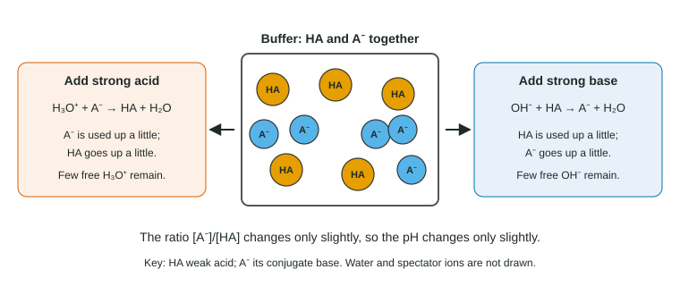

Acid-Base Reactions and Buffers
When a strong acid or base meets a weak one, the reaction goes to completion, so you react the moles first and then ask what is left.
Part 1 · Hook
Why this matters
Part 2 · Before you start
What this builds on
Part 3 · Prerequisite check
Quick check before you start
1. What is the conjugate base of H₂CO₃?
- HCO₃⁻
- CO₃²⁻
- H₃CO₃⁺
- CO₂
Show the answer
Remove one proton: H₂CO₃ → HCO₃⁻.
- Correct: HCO₃⁻:
- CO₃²⁻:
- H₃CO₃⁺:
- CO₂:
2. Ka of HF is 6.8 × 10⁻⁴. What is Kb of F⁻?
- 1.5 × 10⁻¹¹
- 6.8 × 10⁻⁴
- 1.5 × 10³
- 6.8 × 10⁻¹⁸
Show the answer
Kb = Kw / Ka = 1.0 × 10⁻¹⁴ / 6.8 × 10⁻⁴ = 1.5 × 10⁻¹¹.
- Correct: 1.5 × 10⁻¹¹:
- 6.8 × 10⁻⁴:
- 1.5 × 10³:
- 6.8 × 10⁻¹⁸:
3. 30.0 mL of 0.100 M NaOH is added to 20.0 mL of 0.100 M HCl. What is left over?
- 1.00 × 10⁻³ mol OH⁻
- 1.00 × 10⁻³ mol H₃O⁺
- Nothing: the solution is neutral
- 5.00 × 10⁻³ mol OH⁻
Show the answer
3.00 × 10⁻³ mol OH⁻ − 2.00 × 10⁻³ mol H₃O⁺ = 1.00 × 10⁻³ mol OH⁻ in excess.
- Correct: 1.00 × 10⁻³ mol OH⁻:
- 1.00 × 10⁻³ mol H₃O⁺:
- Nothing: the solution is neutral:
- 5.00 × 10⁻³ mol OH⁻:
Part 4 · See it
See it first

Part 5 · Step by step
How it works, step by step
- A strong acid or base reacting with a weak partner has a huge Kthe reaction goes essentially to completion: do it first, with moles
- Partly neutralizing a weak acid leaves both HA and A⁻the mixture is a buffer, and [H₃O⁺] = Ka × [HA]/[A⁻]
- Fully neutralizing a weak acid leaves only its conjugate basethe solution is basic at equivalence, not neutral
- Added H₃O⁺ meets A⁻ and added OH⁻ meets HA in a bufferthe added ions are used up and the pH changes only a little
Part 6 · Key ideas
Key ideas
- Strong + weak acid-base reactions go to completion (K = Ka/Kw or Kb/Kw, huge). Use moles, react first, then find the pH.
- At equivalence: strong acid + strong base gives pH 7; weak acid + strong base gives a basic solution; weak base + strong acid an acidic one.
- A buffer is a weak acid with its conjugate base (or a weak base with its conjugate acid) in similar amounts.
- Make a buffer by mixing HA with a salt of A⁻, or by adding strong base to a weak acid (less than one mole of base per mole of acid).
Part 7 · Misconception
A common mistake
The wrong idea: Equal moles of acid and base always give a neutral solution.
What actually happens: Only for a strong acid with a strong base. A weak acid neutralized by a strong base leaves its conjugate base, which makes the solution basic; a weak base with a strong acid leaves an acidic solution.
Part 8 · Check yourself
Check yourself
Exam-style questions. Anything you miss goes into your review queue.
Data table
Four mixtures of acetic acid and sodium hydroxide
Each flask starts with 50.0 mL of 0.100 M acetic acid, CH₃COOH (Ka = 1.8 × 10⁻⁵). A different volume of 0.100 M NaOH is added to each. Temperature 25 °C.
| Flask | Volume of 0.100 M NaOH added (mL) |
|---|---|
| 1 | 0.0 |
| 2 | 25.0 |
| 3 | 50.0 |
| 4 | 60.0 |
1. Which flask contains a buffer?
- Flask 2
- Flask 1
- Flask 3
- Flask 4
Show the answer
Flask 2 has 5.00 × 10⁻³ mol acetic acid and 2.50 × 10⁻³ mol NaOH. The OH⁻ converts half the acid to acetate, leaving equal amounts of CH₃COOH and CH₃COO⁻: a weak acid with its conjugate base.
- Correct: Flask 2: Right: weak acid and conjugate base in similar amounts.
- Flask 1: Flask 1 holds only acetic acid; there is no conjugate base to react with added acid.
- Flask 3: Flask 3 is exactly neutralized: all the acid became acetate, so there is no weak acid left.
- Flask 4: Flask 4 has excess NaOH and no acetic acid left; its pH is set by the strong base.
2. What is the pH in Flask 2?
Type a number.
Show the answer
After reaction: 2.50 × 10⁻³ mol CH₃COOH and 2.50 × 10⁻³ mol CH₃COO⁻. In Ka = [H₃O⁺][A⁻]/[HA], the volume cancels, so [H₃O⁺] = Ka × (2.50 × 10⁻³)/(2.50 × 10⁻³) = 1.8 × 10⁻⁵ M and pH = −log(1.8 × 10⁻⁵) = 4.74, which is pKa.
- Answer: 4.74
3. What is the pH in Flask 3?
Type a number.
Show the answer
All 5.00 × 10⁻³ mol acid became acetate, now in 100.0 mL: [CH₃COO⁻] = 0.0500 M. Kb = Kw/Ka = 5.56 × 10⁻¹⁰. [OH⁻] = √(5.56 × 10⁻¹⁰ × 0.0500) = 5.27 × 10⁻⁶ M; pOH = 5.278; pH = 8.72.
- Answer: 8.72
4. What is the pH in Flask 4?
Type a number.
Show the answer
OH⁻ added: 6.00 × 10⁻³ mol; acid: 5.00 × 10⁻³ mol. Excess OH⁻ = 1.00 × 10⁻³ mol in 0.1100 L = 0.00909 M. The acetate adds very little OH⁻ beside this. pOH = 2.041; pH = 11.96.
- Answer: 11.96
Particle view
Four solutions
Key: HF hydrofluoric acid molecule; F⁻ fluoride; H₃O⁺ hydronium; Na⁺ sodium ion; Cl⁻ chloride. Water is not drawn, nor the few H₃O⁺ and F⁻ ions made when HF ionizes.
5. Which box represents a buffer?
- P
- Q
- R
- S
Show the answer
Box P has a weak acid (HF) and its conjugate base (F⁻) in equal amounts. Added H₃O⁺ reacts with F⁻; added OH⁻ reacts with HF.
- Correct: P: Right: weak acid plus conjugate base.
- Q: Box Q is a strong acid solution with spare Cl⁻. Cl⁻ is too weak a base to remove added H₃O⁺.
- R: Box R has the base F⁻ but no HF to react with added OH⁻.
- S: Box S has the weak acid but no F⁻ to react with added H₃O⁺.
6. Box Q contains Cl⁻, the conjugate base of HCl. Why is it not a buffer?
- Cl⁻ is the conjugate base of a strong acid, so it does not take H⁺ from added H₃O⁺
- It has more Cl⁻ than H₃O⁺, and a buffer needs equal amounts
- Na⁺ ions react with added OH⁻ and use it up
- A buffer is a solution with no H₃O⁺ ions
Show the answer
HCl ionizes fully, so its conjugate base has a negligible Kb: Cl⁻ does not pick protons back up. Added acid would stay as free H₃O⁺, and the pH would drop sharply.
- Correct: Cl⁻ is the conjugate base of a strong acid, so it does not take H⁺ from added H₃O⁺: Right: a buffer needs a conjugate base strong enough to react with added acid.
- It has more Cl⁻ than H₃O⁺, and a buffer needs equal amounts: Buffers work over a range of ratios; unequal amounts are not the problem here.
- Na⁺ ions react with added OH⁻ and use it up: Na⁺ is a spectator ion; it does not react with OH⁻.
- A buffer is a solution with no H₃O⁺ ions: Every water solution has some H₃O⁺, buffers included.
Experimental setup
Two acid-base reactions
Reaction I: aqueous HF (Ka = 6.8 × 10⁻⁴) is mixed with aqueous NaOH.
Reaction II: aqueous NH₃ (Kb = 1.8 × 10⁻⁵) is mixed with aqueous HCl.
7. Equal moles of NH₃ and HCl react in Reaction II. Which describes the final solution?
- Acidic, because NH₄⁺ gives protons to water
- Neutral, because equal moles of acid and base reacted
- Basic, because NH₃ is a base
- Neutral, because Cl⁻ is a spectator ion
Show the answer
The product NH₄⁺ is the conjugate acid of a weak base: NH₄⁺ + H₂O ⇌ NH₃ + H₃O⁺ (Ka = Kw/Kb = 5.6 × 10⁻¹⁰), so the solution is slightly acidic.
- Correct: Acidic, because NH₄⁺ gives protons to water: Right: the conjugate acid of a weak base is a weak acid.
- Neutral, because equal moles of acid and base reacted: Equal moles give a neutral solution only for strong acid with strong base.
- Basic, because NH₃ is a base: All the NH₃ was converted to NH₄⁺; no base is left.
- Neutral, because Cl⁻ is a spectator ion: Cl⁻ is a spectator, but NH₄⁺ is not: it reacts with water.
Part 9 · Summary
Summary
Part 10 · Up next
What comes next
Part 11 · Connections